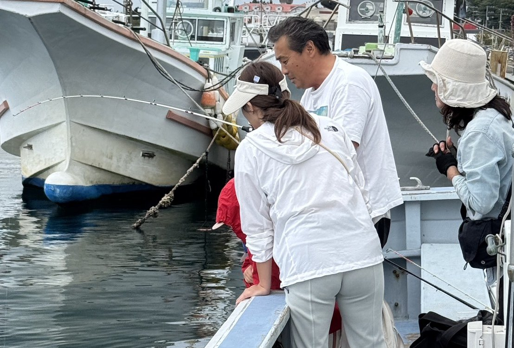

FOR BEGINNERS
初めての方へ
WELCOME
はじめての釣りでも、大丈夫。
「道具を持っていない」「船長がこわそう」——そんな心配はいりません。
一休丸は、お客様から「優しい」「話しやすい」とよく言っていただける船宿です。
手ぶらでOK
竿・リールはレンタルでご用意。ライフジャケットは全員分を無料でお貸しします。
船長がそばでサポート
エサの付け方から魚の取り込みまで、わからないことは何でも聞いてください。
釣った魚もおまかせ
魚捌きサービス（お一人様2,000円）で、持ち帰ってすぐ料理できます。
FLOW
ご予約から当日までの流れ
- STEP 1
ご予約
お電話またはLINEで、ご希望の日にち・人数・釣り物をお知らせください。道具のレンタルもこのときにお申し付けください。
- STEP 2
前日
天候・海況を見て出船を判断します。中止の場合は前日21時頃までにご連絡します。
- STEP 3
集合・受付
城ヶ島658-142 FISHSTAND前（船着場）に、ご予約時にお伝えする集合時間までにお越しください。
- STEP 4
乗船・釣り
ライフジャケットを着用して出船。ポイントに着いたら、船長が釣り方をご説明します。
- STEP 5
帰港・お会計
16時までに帰港します。お支払いは現金のみ（3号船・5号船は全員まとめてのお支払いに限りカード可）。
CHECKLIST
持ち物
竿・リール・ライフジャケットは船でご用意できます。そのほかは、こちらを参考にお持ちください。
あればお持ちください
- クーラーボックス（釣った魚の持ち帰り用）
- タオル
- 飲み物・昼食
- 雨具（上下セパレートのもの）
- 帽子
- 酔い止め薬
あると便利なもの
- 偏光サングラス
- 日焼け止め
- 滑りにくい手袋
- 着替え
- 保冷剤・氷
- ゴミ袋
CLOTHING
服装について
汚れてもよい動きやすい服装で。足元は滑りにくい靴や長靴がおすすめです（サンダル・ヒールはご遠慮ください）。
重ね着で調整を
朝晩と日中の気温差が大きい季節です。脱ぎ着しやすい上着をご用意ください。
日差し・熱中症対策を
帽子・長袖・サングラスで日差しを防ぎ、飲み物は多めにお持ちください。
しっかり防寒を
海の上は陸より寒く感じます。防寒着・手袋・ニット帽などで暖かくしてお越しください。
SEASICKNESS
船酔い対策
- 前日は十分な睡眠をとり、お酒は控えめに
- 朝食は軽めに、空腹・満腹は避ける
- 酔い止め薬は出航の1時間ほど前に服用
- 船の上では遠くの景色を見て、下を向きすぎない
RULES
船上でのお約束
- 船上ではライフジャケットを必ず着用してください
- 船長の指示に従ってください（移動中は座ってお待ちください）
- 針や仕掛けの扱いには、周りの方にもご注意ください
- ゴミはお持ち帰りください
MEETING POINT
集合場所・駐車場
- 集合場所
- 城ヶ島658-142 FISHSTAND前（船着場）
- 住所
- 〒238-0237 神奈川県三浦市三崎町城ヶ島658-29
- 駐車場
- 船着場前の岸壁沿い（先着順）
満車の場合は近隣の有料駐車場をご利用ください。
Q&A
よくあるご質問
- Q. 雨でも出船しますか？
- にわか雨程度なら出船します。波が高い場合は晴れていても中止になることがあります。
- Q. 小さな子供連れでも大丈夫ですか？
- 近場で楽しめるチョイ五目プランもあり、ご家族連れにも人気です。
- Q. キャンセル料はかかりますか？
- 7〜2日前20%、前日50%、当日100%です。天候による中止の場合はかかりません。

CONTACT
城ヶ島の海で、
お待ちしています。
ご予約・お問い合わせ 電話受付 8:00〜20:00 ／ LINEでもお気軽にどうぞ